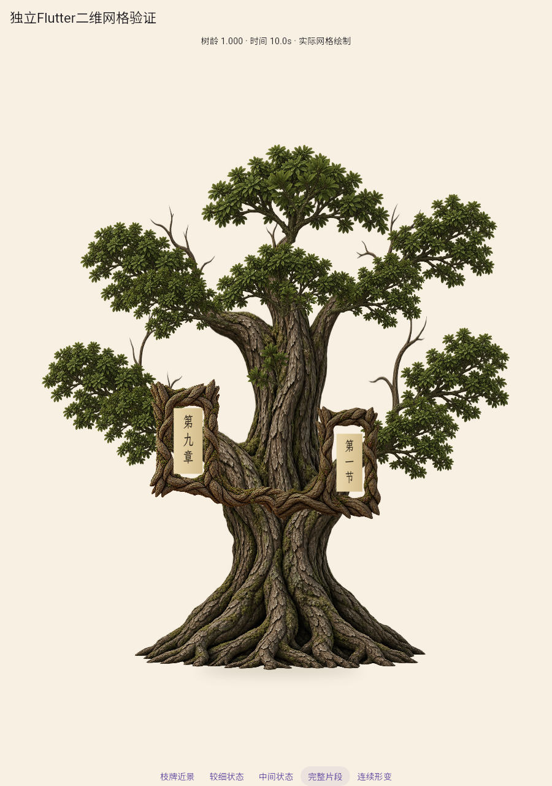
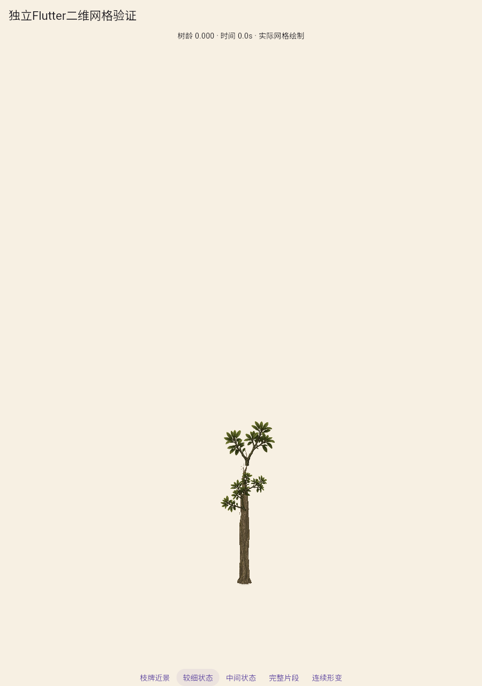
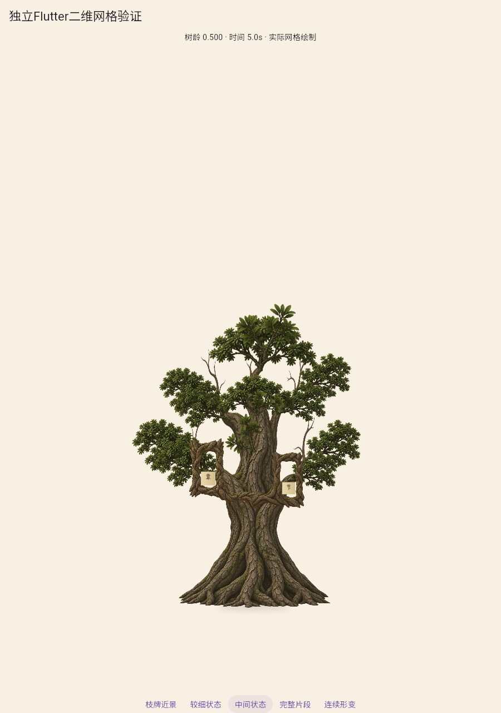
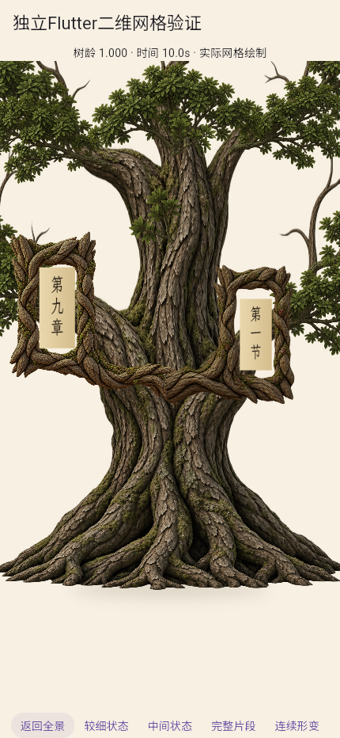
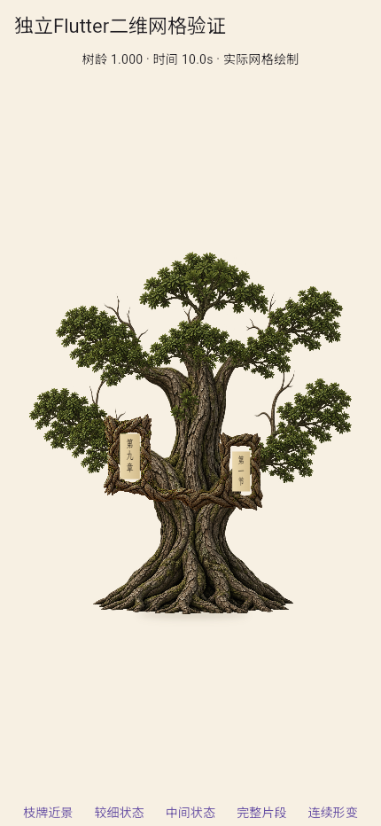

自然细梢与截面控制：首套完整候选
没有旧夹细和粗截口，但冠层分层、幼干僵直/老木纹、牌框实体接合仍未过。左牌素材基点alpha为0，不能把几何共点当木质接合。A2未通过，剩一次整体修改。
 对照冠层层级、干根体积和整体材质。
对照冠层层级、干根体积和整体材质。

自然细梢保留，但部分伸出叶簇，冠层仍割裂。

根干叶齐全，幼干偏直，旧木纹仍突出。

同一网格UV和同源挂点，不能由此证明发育自然。

成熟文字可读，实体端口与覆盖尚未通过。

430×932独立预览，不是真机或正式页面。
固定相机连续成长
101个实际Flutter状态、10.1秒，显示时间和树龄。编码10fps不是运行帧率。
运行与哈希 · 源资产与挂点权重 · 完整区间朝向审计 · 初版统一误差界未证明结果 · 素材基点检查 · 默认局部模式回归 · 文件媒体复核 · 首轮结论与第二轮条件